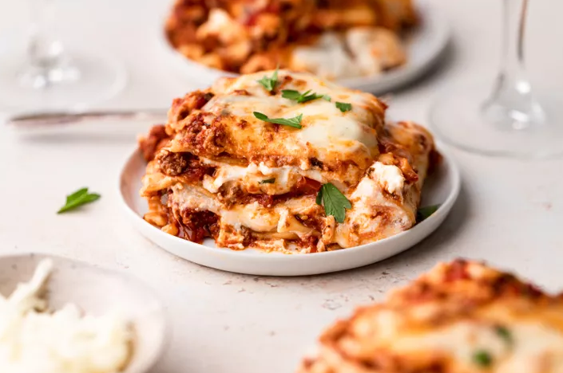

Lasagna from a random person named Elise Bauer
Elise Bauer we love u! :P

Everyone loves a good lasagna, right? It's a great way to feed a crowd and a perfect dish to bring to a potluck. It freezes well. It reheats well. Leftovers will keep you happy for days.
Simply Recipes reader Alton Hoover sent me his favorite recipe for lasagna which he has been cooking since his college days. Alton's original recipe created enough lasagna for a small army so I halved it. What is posted here will easily serve eight people.
Here you can see what you will need:
Ingredients
- 2 teaspoons extra virgin olive oil
- 1 pound ground beef chuck
- 1/2 medium onion, diced (about 3/4 cup)
- 1/2 large bell pepper (green, red, or yellow), diced (about 3/4 cup)
- 2 cloves garlic, minced
- 1 (28-ounce)can good-quality tomato sauce
- 3 ounces tomato paste (half a 6-ounce can)
- 1 (14 ounce) can crushed tomatoes
- 2 tablespoons chopped fresh oregano, or 2 teaspoons dried oregano
- 1/4 cup chopped fresh parsley (preferably flat leaf), packed
- 1 tablespoon Italian seasoning
- 1 pinch garlic powder and/or garlic salt
- 1 tablespoon red or white wine vinegar
- 1 tablespoon to 1/4 cup sugar (to taste, optional)
- Salt
Method
Please follow CAREFULLY the steps described below!
- Put pasta water on to boil
- Brown the ground beef
- Cook the bell pepper, onions, garlic, add back the beef
- Transfer to medium sized pot, add tomatoes and remaining sauce ingredients to build the sauce
- Boil and drain the lasagna noodles
- Heat the oven to 375°F
- Assemble the lasagna like a rObOt
- Bake
- Cool and serve with whoever you want
You may want to check the original recipee at: oRiGinAl laSagNa rEcipe
Nutrition Facts
This is only for the gym bros:
- Calories:813
- Fat:51g
- Carbs:30g
- Protein:60g
Homepage